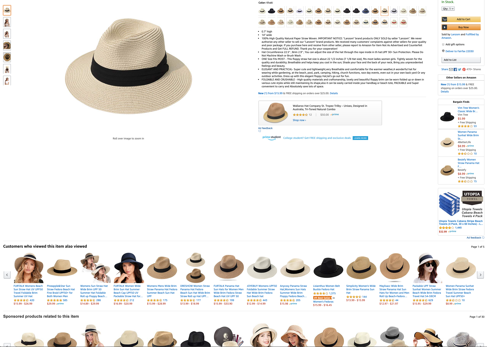
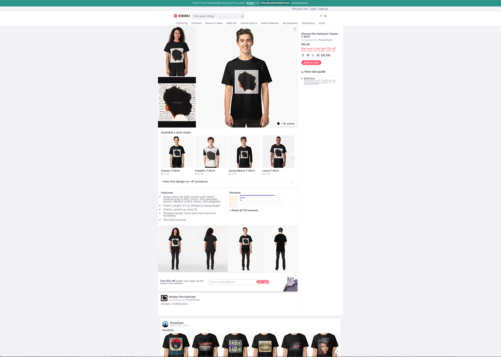
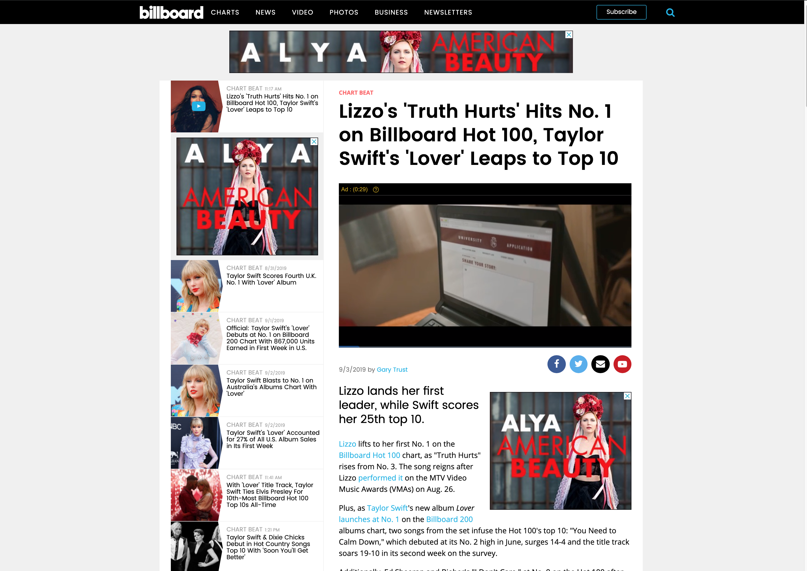
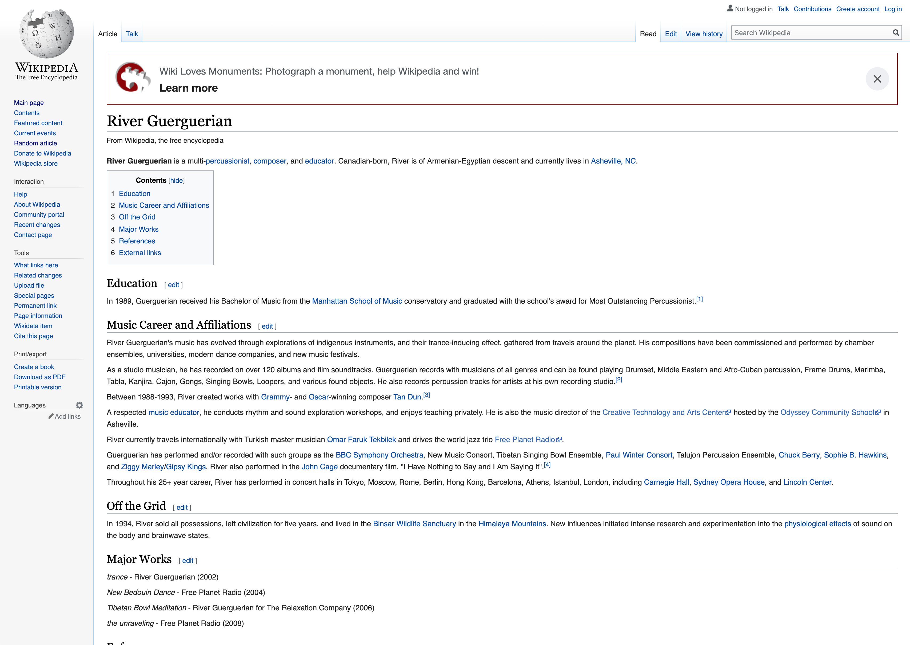

Peter Parker
AVT-217-004
Fall 2019
“Bad” designed websites
amazon.com
Amazon’s storefront, amazon.com, is a website that I would generally consider to not have a good design. When using it, it often feels very cluttered in its presentation of information: sections of information on product pages aren’t presented in a way that is relevant, and much of the information that is presented feels very cramped together. Another issue is its lack of a coherent visual aesthetic. A lot of the website feels stuck in a late 2000s-early 2010s style with gradient shaded buttons and lack luster image presentation, while at the same time, custom store pages feel much more modern.
This mass presentation of information could be considered a good thing, however, as users will be more exposed to various products they have already looked at or could be interested and therefore more swayed into buying something.
redbubble.com
Redbubble, an online storefront where artists can upload designs and put them on various merchandise, suffers from a similar problem as amazon. It’s product pages have a lot of information that isn’t presented in a way that makes sense to the user. Individual store pages are also confusing to navigate; clicking on something may not lead you to the place you thought it would. It does, however, look more modern and with the times.
“Good” designed websites
Billboard is a music charting and news company, so their website offers both of these things. The specific news article pages aren’t just the article on their own like most other websites. Instead, you are able to continuously scroll down to the next article in that topic, similar to a social media website. Billboard’s chart pages are expectedly laid out in a similar way, with chart positions descending from top to bottom. Chart presentation is also very minimal informationally and aesthetically, which is nice for being able to clearly see song positions.
Something that is confusing about the Billboard website, however, is its homepage, as the layout of articles, videos, and embeds don’t make sense beyond the very top of the webpage. There isn’t a logical order to them outside of presenting the latest headlines and highest chart positions at the top of the page.
wikipedia.org
Wikipedia has good web design because it is very legible and logically organized, and maintains this look consistently throughout all its articles. Both of these things are very necessary when its primary purpose is getting information across to the reader. It also has maintained a visual look that isn’t reminiscent of any time period and very bare and straightforward, similar to a real-life encyclopedia.